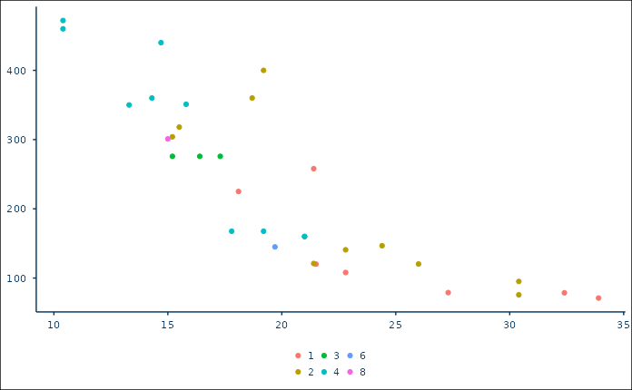

This function allows you to add the RUB theme to your ggplot charts.
Usage
theme_rub(
base_size = 11,
base_family = "RubFlama",
base_line_size = base_size/22,
base_rect_size = base_size/22,
color = RUB_colors["blue"],
has_facet = FALSE,
x_axis_label = FALSE,
y_axis_label = FALSE,
legend_title = FALSE,
plot_width = 6.8
)Arguments
- base_size
base font size, defaults to 11
- base_family
base font family, defaults to RubFlama
- base_line_size
base size for line elements, defaults to base_size/22
- base_rect_size
base size for rect elements, defaults to base_size/22
- color
Color for font and borders, defaults to
RUB_colors["blue"], i.e. #003560.- has_facet
Boolean indicating whether facet headings are required, defaults to FALSE.
- x_axis_label
Boolean indicating whether there is a label for the x-axis, defaults to FALSE.
- y_axis_label
Boolean indicating whether there is a label for the y-axis, defaults to FALSE.
- legend_title
Boolean indicating whether there is a label for the legend, defaults to FALSE.
- plot_width
Width of the plot in inches, defaults to 6.8
Examples
# Base plot
ggplot2::ggplot(
mtcars,
mapping = ggplot2::aes(
x = mpg,
y = disp,
color = as.factor(carb)
)
) +
ggplot2::geom_point() +
theme_rub(
base_family = "sans"
)
